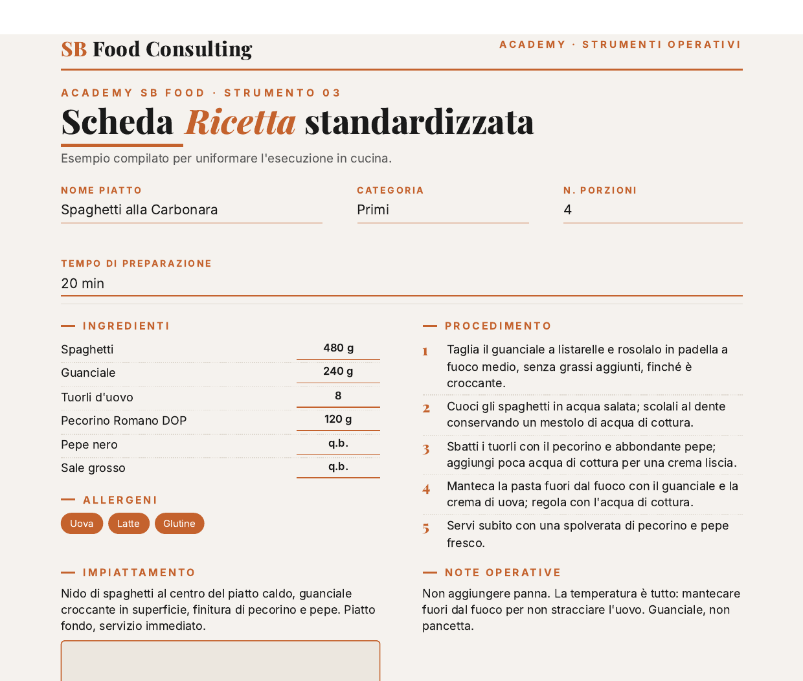

Strumento gratuito
Scheda
Scheda
Ricetta Standard
La scheda tecnica per standardizzare ogni ricetta: ingredienti, grammature, procedura. Così il piatto è identico a ogni servizio, chiunque lo prepari.
- Lo stesso piatto identico ogni volta, chiunque sia in cucina.
- Un nuovo cuoco esegue senza doverti chiedere ogni passaggio.
- La base per calcolare il food cost e ridurre gli sprechi.
- Pronta da stampare in A4, da tenere in cucina.
PDF gratis · modello + esempio compilato
Esempio compilato
